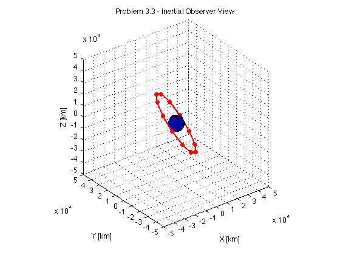
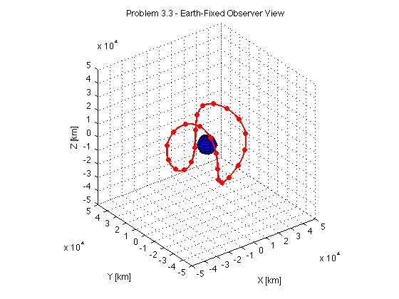
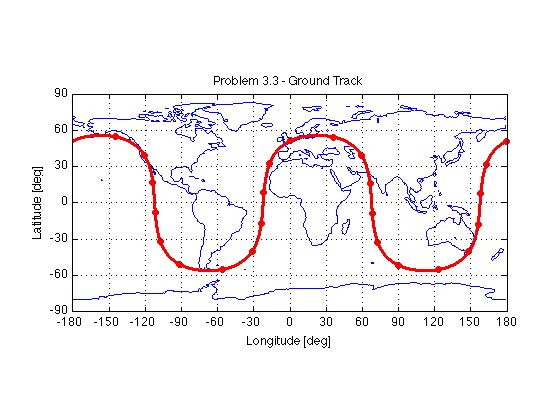

close all; clear all;
muearth = 398600.4418;
reearth = 6378.137;
rotEarthRad = 0.0000729211585530;
rotEarthDay = 1.0027379093;
rotEarthDay = rotEarthRad*3600*24/(2*pi);
e2earth = 0.006694385000;
gst2012start = 6.6706801;
gst2012start = gst2012start * 2*pi/24;
yearo = 2012;
to = 104.16441319;
inc = 56.1095;
RAAN = 57.6374;
ecc = 0.0039356;
omega = 355.0140;
Mo = 4.9311;
meanmotion = 2.00579332;
inc = inc*pi/180;
RAAN = RAAN*pi/180;
omega = omega*pi/180;
Mo = Mo*pi/180;
t = 1:(24*60*60);
n = (meanmotion*2.0*pi)/(24*60*60);
p = ((muearth/(n*n))^(1.0/3.0))*(1.0-ecc*ecc);
eci_C_peri = PERI_C_ECI(RAAN,inc,omega)';
O_r_S__eci = zeros(length(t),3);
O_r_S__ecef = zeros(length(t),3);
lat_S = zeros(length(t),1);
lon_S = zeros(length(t),1);
he_S = zeros(length(t),1);
for i = 1:length(t)
UTC = UTC_time(1,5,2012,t(i));
MeanAnom = mod(n*(UTC - to)*24*60*60 + Mo,2*pi);
EccAnom = EccentricAnomaly(MeanAnom,ecc,1e-10);
TrueAnom = TrueAnomaly(EccAnom, MeanAnom, ecc);
r = p./(1+ecc*cos(TrueAnom));
O_r_S__peri = [r*cos(TrueAnom); r*sin(TrueAnom); 0];
O_r_S__eci(i,:) = eci_C_peri * O_r_S__peri;
theta_g = mod(gst2012start + rotEarthDay*(UTC - 1)*2*pi,2*pi);
ecef_C_eci = [cos(theta_g) sin(theta_g) 0; -sin(theta_g) cos(theta_g) 0; 0 0 1];
O_r_S__ecef(i,:) = ecef_C_eci * O_r_S__eci(i,:)';
[lat_S(i), lon_S(i), he_S(i)] = ECEF_To_Geodetic(O_r_S__ecef(i,1), O_r_S__ecef(i,2), O_r_S__ecef(i,3));
end
plotcolor = 'red';
ticki = 60*60;
load('topo.mat', 'topo');
topoplot = [topo(:,181:360) topo(:,1:180)];
[xeplot, yeplot, zeplot] = ellipsoid(0.0, 0.0, 0.0, ...
reearth, reearth, reearth, 10);
figure(1);
clf;
surface(xeplot, yeplot, zeplot, 'FaceColor', 'blue', 'EdgeColor', 'black');
hold on;
axis equal;
view(3);
grid on;
set(gca,'XLim', [-50000 +50000], ...
'YLim', [-50000 +50000], ...
'ZLim', [-50000 +50000], ...
'XTick', [-50000:10000:+50000], ...
'YTick', [-50000:10000:+50000], ...
'ZTick', [-50000:10000:+50000]);
title('Problem 3.3 - Inertial Observer View');
xlabel('X [km]');
ylabel('Y [km]');
zlabel('Z [km]');
plot3(O_r_S__eci(:,1), ...
O_r_S__eci(:,2), ...
O_r_S__eci(:,3), ...
'Color', plotcolor, 'LineStyle', '-', 'LineWidth', 2);
plot3(O_r_S__eci(1:ticki:end,1), ...
O_r_S__eci(1:ticki:end,2), ...
O_r_S__eci(1:ticki:end,3), ...
'Color', plotcolor, 'LineStyle', 'none', ...
'Marker', 'o', 'MarkerFaceColor', plotcolor, 'MarkerSize', 5);
figure(2);
clf;
surface(xeplot, yeplot, zeplot, 'FaceColor', 'blue', 'EdgeColor', 'black');
hold on;
axis equal;
view(3);
grid on;
set(gca,'XLim', [-50000 +50000], ...
'YLim', [-50000 +50000], ...
'ZLim', [-50000 +50000], ...
'XTick', [-50000:10000:+50000], ...
'YTick', [-50000:10000:+50000], ...
'ZTick', [-50000:10000:+50000]);
title('Problem 3.3 - Earth-Fixed Observer View');
xlabel('X [km]');
ylabel('Y [km]');
zlabel('Z [km]');
plot3(O_r_S__ecef(:,1), ...
O_r_S__ecef(:,2), ...
O_r_S__ecef(:,3), ...
'Color', plotcolor, 'LineStyle', '-', 'LineWidth', 2);
plot3(O_r_S__ecef(1:ticki:end,1), ...
O_r_S__ecef(1:ticki:end,2), ...
O_r_S__ecef(1:ticki:end,3), ...
'Color', plotcolor, 'LineStyle', 'none', ...
'Marker', 'o', 'MarkerFaceColor', plotcolor, 'MarkerSize', 5);
figure(3);
clf;
contour(-180:179, -90:+89, topoplot, [0 0], 'blue');
hold on;
axis equal;
grid on;
set(gca,'XLim', [-180 +180], 'YLim', [-90 +90], ...
'XTick', [-180:30:+180], 'Ytick', [-90:30:+90]);
title('Problem 3.3 - Ground Track');
xlabel('Longitude [deg]');
ylabel('Latitude [deg]');
plot(lon_S*180.0/pi, lat_S*180.0/pi, ...
'Color', plotcolor, 'LineStyle', 'none', ...
'Marker', 'o', 'MarkerFaceColor', plotcolor, 'MarkerSize', 2);
plot(lon_S(1:ticki:end)*180.0/pi, lat_S(1:ticki:end)*180.0/pi, ...
'Color', plotcolor, 'LineStyle', 'none', ...
'Marker', 'o', 'MarkerFaceColor', plotcolor, 'MarkerSize', 5);
  